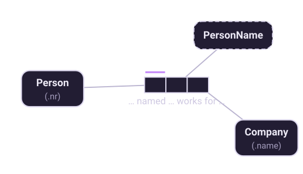
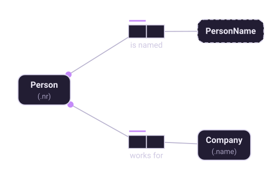

Chapter 2 of 10
Elementary facts
The atom of an ORM model, and the test for whether you have one.
The definition
Halpin's definition is worth quoting, because every quality check in the method depends on it:
The clause in bold is the working part. "Bill Clinton jogs and is the president of the USA" is perfectly true, and it is not elementary: it says two things that could each be said on their own. Split it, and nothing is lost.
Getting the facts out of a report
You rarely start from a blank page. You start from something the business already uses — a printed report, a spreadsheet, a screen, a form. The first step of the design procedure is to read information off that artefact as sentences:
The Academic with empNr 715 has EmpName 'Adams A'.
The Academic with empNr 715 works for the Dept named 'Computer Science'.
The Academic with empNr 715 occupies the Room with roomNr '69-301'.
The Academic with empNr 139 is tenured.Notice the shape of these sentences. Each names its objects by a definite description — the Academic with empNr 715, not just "715" — and each says exactly one thing. The last one is a unary fact: an object with a property, no second object involved.
Halpin's advice for step 1 is to imagine you are reading the report to a friend over the telephone. It is a good test. You would not say "715, Adams A, Computer Science"; you would say who works where.
The and-test
Suppose someone writes this instead:
The Academic with empNr 715 and empName 'Adams A' works for the Dept 'Computer Science'.
The word and is the clue. Where a fact contains an "and" joining independent pieces of information, it can usually be split without losing anything. Split this one and you get two fact types, each of which stands on its own:

Halpin is careful to call the and-test a heuristic, not a rule. Sometimes a compound really is irreducible — a composite naming scheme, for instance, where neither half identifies anything on its own. Chapter 5 gives the formal check that catches these cases; at this stage you are looking for obvious splits and asking the domain expert about the rest.
Why splitting matters
It is tempting to treat this as pedantry. It is not, for three reasons.
Constraints get sharper. In the compound version you cannot say "each Academic has exactly one name" without also saying something about departments, because they share a fact type. Split, each constraint lands on exactly the fact it constrains.
Nulls disappear. A compound fact type forces every part to be present at once. If an academic has no department yet, the compound fact cannot be recorded — so a real system invents a null, and now the model says something it did not mean. Elementary facts are recorded independently, so absence is simply the absence of a fact.
Change stays local. When names become multi-valued, or departments become time-varying, the fact type that changes is the only fact type that changes.
The population check
Once the fact types are drawn, populate each one with at least one row from the source report. This is step 2 of the design procedure and it catches a surprising number of errors:
- a fact type you cannot populate is usually one you invented rather than observed;
- a fact type whose sample rows repeat a value in a column tells you where the uniqueness constraints go, and where they do not;
- a fact type where two rows contradict each other tells you that the constraint you were about to add is wrong.
The sample population is not part of the schema. It is scaffolding — but it is scaffolding that turns "does this look right?" into "here are two rows; can both be true?", which is a question a domain expert can answer without knowing any notation at all.
Going further. This chapter is the short version. Fact-Based Agents covers it as “The Elementary Fact” — arity from unary to n-ary, roles and readings in full, and exactly what you commit to when you draw one.
Eighteen chapters, 61 diagrams and 38 working models, on Leanpub.